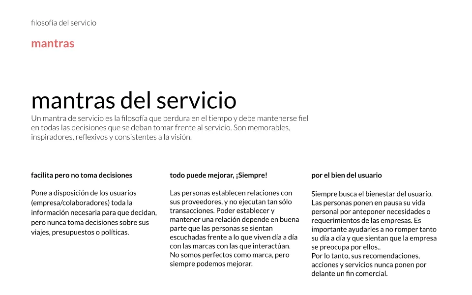
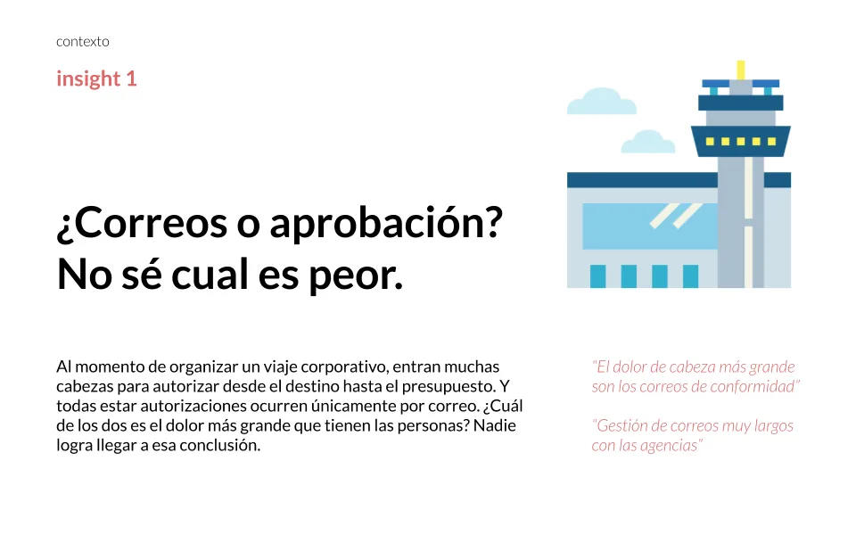
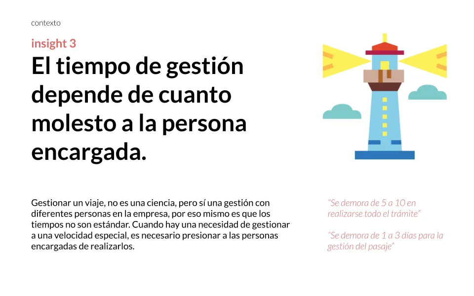
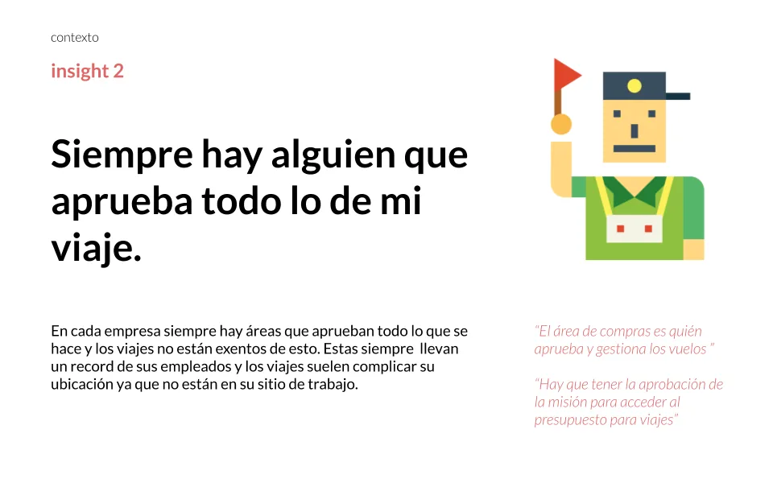
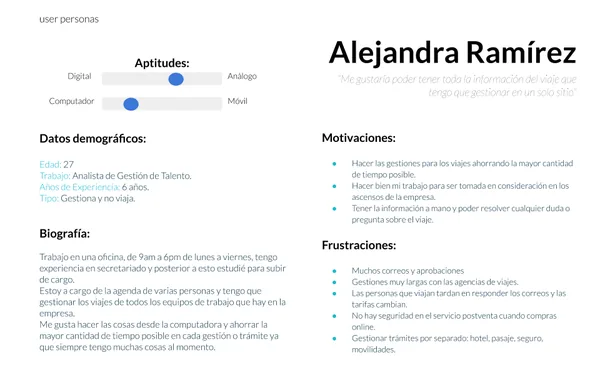
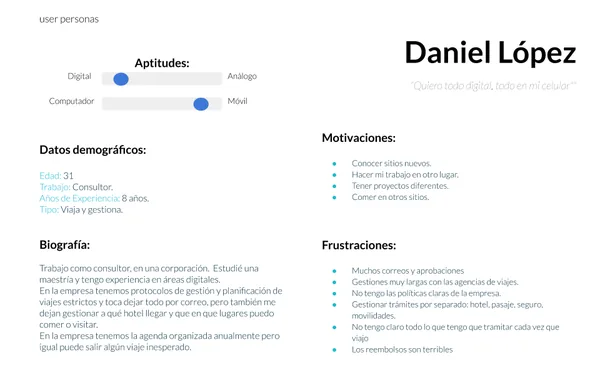
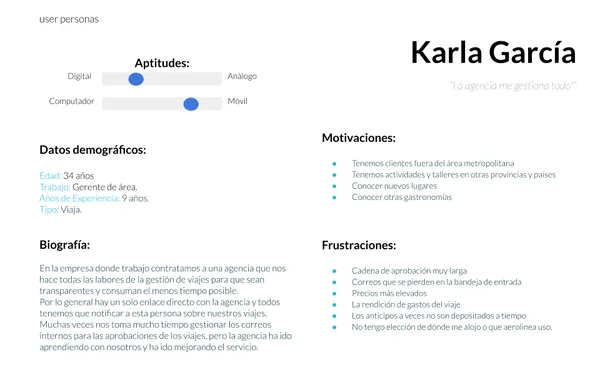
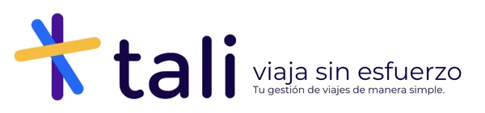
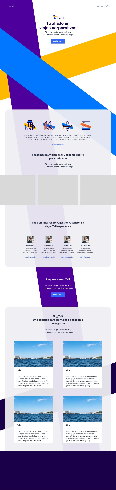

Contexto
Este proyecto nació como una iniciativa privada para crear una agencia de viajes completamente digital orientada a empleados de grandes corporaciones. Se trató de diseñar un servicio que permitiera planificar, visualizar y gestionar viajes corporativos desde diferentes dispositivos y roles, sin fricción.
Trabajamos como equipo freelance de 3 personas durante 2 meses, desarrollando todo desde cero: investigación de mercado, definición de usuarios, diseño de experiencia, creación de marca, naming y propuesta de valor completa.
Aunque el proyecto no se implementó por temas de financiamiento, realizamos una entrega completa que incluyó investigación cualitativa, clusterización de insights, diseño de flujos diferenciados por usuario, identidad de marca (incluyendo el nombre TALI) y landing page funcional. Fue una experiencia valiosa por la complejidad de usuarios, casuísticas y flujos involucrados.
El Desafío
Diseñar desde cero una plataforma digital que permitiera a múltiples perfiles de usuario (viajeros, supervisores, RRHH, soporte) gestionar viajes corporativos de forma fluida, considerando las complejidades de autorizaciones, rendiciones, trazabilidad y soporte en cada etapa del viaje.
Mi Rol en el Proyecto
Me desempeñé como Researcher / Service Designer, trabajando en equipo freelance con otras 2 diseñadoras. Acompañé el proyecto desde su fase cero hasta la entrega de la propuesta completa.
Composición del equipo:
- Yo (Researcher / Service Designer)
- 1 Service Designer
- 1 Diseñadora de Marca
Mis tareas incluyeron:
- Investigación contextual sobre hábitos de viaje y gestión corporativa
- Realización de entrevistas cualitativas con potenciales usuarios
- Clusterización de insights y síntesis de hallazgos
- Definición de 4 perfiles de usuario (personas): viajero, responsable de RRHH, supervisor, soporte
- Mapeo de flujos de interacción diferenciados según tipo de usuario
- Co-diseño de marca, estrategia y pilares de servicio
- Participación en el proceso de naming (resultado: TALI)
- Diseño de pantallas referenciales para visualizar el flujo general
Enfoque y Proceso
Trabajamos con un enfoque de diseño centrado en el usuario, combinando investigación cualitativa con diseño estratégico y construcción de marca.
1. Entendimiento del Reto y Oportunidad
Exploración del mercado y contexto:
- Reuniones con stakeholders y futuros clientes potenciales
- Análisis de plataformas similares y sus limitaciones
- Detección de fricciones comunes en la gestión de viajes corporativos: visibilidad, trazabilidad, autorizaciones, rendiciones, soporte
- Identificación de oportunidades en el mercado peruano
2. Investigación Cualitativa
Entrevistas y síntesis de insights:
- Entrevistas cualitativas con empleados corporativos, responsables de RRHH y personal de soporte
- Clusterización de hallazgos en herramientas colaborativas
- Identificación de pain points por cada rol
- Mapeo de necesidades diferenciadas antes, durante y después del viaje
3. Definición de Usuarios y Experiencia
Construcción de perfiles y flujos:
- Creación de 4 personas clave: viajero, responsable de RRHH, supervisor, soporte
- Mapeo de flujos específicos para cada perfil, adaptados a múltiples dispositivos
- Identificación de puntos de cruce, validaciones y pain points específicos por rol
- Diseño de journey considerando antes, durante y después del viaje
4. Construcción de Marca
Identidad, naming y propuesta de valor:
- Co-diseño de la propuesta de valor y mantras de servicio
- Dinámicas de co-creación para definir el nombre: TALI
- Diseño de identidad visual y primer set de lineamientos
- Ajustes visuales y técnicos para asegurar legibilidad en formatos físicos y digitales
5. Entrega Final
Documentación y entregables:
- Documento de síntesis estratégica y propuesta de servicio
- 4 perfiles de usuario documentados con pain points y necesidades
- Flujos diferenciados por usuario
- Pantallas clave para visualizar la navegación y lógica del portal
- Guía base de identidad de marca
- Landing page funcional
Hallazgos Clave
El mismo viaje tiene múltiples puntos de vista
Un solo viaje corporativo es percibido y gestionado de forma completamente diferente por el viajero, el planificador, el aprobador y el equipo de seguimiento. Cada rol tiene necesidades, fricciones y expectativas distintas que deben ser atendidas sin crear complejidad innecesaria.
Es fácil caer en flujos infinitos
Si no se definen límites claros por usuario y contexto, los flujos pueden volverse infinitamente complejos. Fue crucial establecer qué acciones correspondían a cada rol y en qué momento del journey.
Las necesidades cambian en cada momento del viaje
Antes del viaje: planificación y aprobaciones. Durante el viaje: soporte y modificaciones. Después del viaje: rendiciones y cierres. La plataforma debe anticiparse a estos momentos cambiantes.
La coherencia digital-física es fundamental
En entornos corporativos, la coherencia entre lo digital (plataforma) y lo impreso (vouchers, reportes) es crucial para la percepción de profesionalismo y confiabilidad del servicio.
La visibilidad genera confianza
Tanto viajeros como supervisores necesitan visibilidad completa del estado del viaje en tiempo real. La trazabilidad no es un "nice to have", es un requisito fundamental.
Un producto que no llegó a mercado
TALI no se lanzó. La financiación no llegó y el proyecto se detuvo con todo entregado. Contarlo como si hubiera sido un éxito sería mentir, y contarlo como un fracaso sería no haber entendido nada. Esto es lo que saqué en limpio.
1. Lo que se paró no fue el diseño
La propuesta se entregó completa: cuatro perfiles de usuario definidos con sus flujos diferenciados, la marca construida desde cero y una landing funcional. El proyecto no se detuvo porque la solución no convenciera ni porque el diseño no funcionara, sino porque la ronda de financiación no se cerró. Es una distinción que importa: hay proyectos que mueren por el producto y proyectos que mueren por el calendario de otro.
2. Cuatro perfiles fue la decisión acertada, y también el riesgo
Para una plataforma de gestión de viajes corporativos, quien reserva, quien viaja, quien aprueba y quien paga no son la misma persona y quieren cosas incompatibles. Modelar los cuatro por separado, con su flujo propio, fue lo que hizo la propuesta creíble ante el cliente. También fue lo que la hizo grande: cuatro flujos completos es mucho alcance para validar antes de tener dinero.
3. Lo que haría distinto: validar con menos
Hoy no empezaría por los cuatro perfiles. Elegiría uno —probablemente quien aprueba, que es donde está la fricción y el presupuesto— y construiría solo su flujo para llevarlo a una conversación con un comprador real antes de dibujar el resto. Un perfil bien validado convence más a un inversor que cuatro bien dibujados, y cuesta la cuarta parte.
4. Entregar aunque se pare
Cuando quedó claro que el proyecto no seguía, cerramos igualmente: investigación documentada, marca entregada, landing funcional. Podríamos haberlo dejado a medias, y nadie habría reclamado. Terminar un encargo que no va a ninguna parte es una decisión de oficio, y es la razón por la que seis años después el caso todavía se puede contar.
5. Para qué sirve un caso que no se lanzó
En producto se aprende más de lo que no salió que de lo que sí, porque en lo que sale nunca sabes qué parte fue mérito y qué parte fue suerte. Aquí sé exactamente qué decisión tomaría distinto y por qué. Un portafolio en el que todo funcionó es un portafolio en el que nadie tomó riesgos.
Entregables y Estado del Proyecto
Entregables finales:
- Entrega completa de investigación y diseño de la experiencia de servicio
- Propuesta de marca validada con el cliente (nombre TALI + identidad visual)
- 4 perfiles de usuario documentados con pain points y necesidades específicas
- Mapeo detallado de flujos, usuarios y puntos de fricción clave
- Landing page funcional
- Clusterización de insights de investigación
Estado del proyecto:
El proyecto fue pausado por temas de financiamiento, pero todos los entregables quedaron listos para futura activación o inversión. La propuesta completa demostró viabilidad conceptual y estratégica, validando el valor de un servicio de este tipo en el mercado corporativo peruano.
Reflexiones
Diseñar para muchos perfiles a la vez exige límites claros, visión estratégica y mucho detalle.
Este proyecto me ayudó a comprender mejor los retos de servicios complejos con múltiples usuarios simultáneos, y la importancia de hacer visual incluso lo que todavía no existe. Trabajar en un equipo pequeño y multidisciplinario fue enriquecedor: cada una aportaba su expertise y juntas construimos algo coherente.
Aunque el proyecto no se implementó, el aprendizaje fue invaluable. Diseñar desde cero te obliga a cuestionar cada decisión: ¿por qué este flujo y no otro? ¿Por qué este nombre? ¿Qué problema real estamos resolviendo? No tener restricciones de sistemas legacy fue liberador, pero también exigió mayor rigor estratégico.
Crear la marca TALI desde cero, incluyendo naming, identidad y propuesta de valor, fue una experiencia completa de diseño estratégico que me mostró cómo el diseño de servicios y el branding deben caminar juntos desde el primer día.
Recursos Visuales
Clusterización de Investigación
Síntesis de hallazgos de las entrevistas cualitativas realizadas.

Mantras del servicio

Hallazgo sobre las aprobaciones

Hallazgo sobre el tiempo de gestión

Hallazgo sobre aprobaciones
Tipos de Usuarios
Users creados a raíz de la investigación realizada, los cuales reflejarían los flujos de la plataforma

User que gestiona y no viaja

User que gestiona y viaja

User que solo viaja, lo gestiona alguien más
Landing Page TALI
Diseño de la landing page presentando la propuesta de valor de la plataforma.

logo y propuesta de valor inicial

Landing page con propuesta de valor